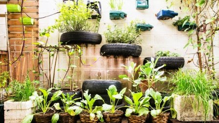

Beneficios del uso de la bicicleta

Cada vez son más las ciudades que apuestan por propuestas ambientales que mejoren ya no solo el día a día de la ciudad si no que piensen en un futuro conjunto para el planeta. En esos casos entra el uso de la bicicleta. Seguir Leyendo...
Uso de productos reutilizables

La reutilización ocupa el segundo puesto en la jerarquía de residuos, después de la prevención y por encima del reciclaje ya que es importante porque hace que la primera vida útil sea más larga, evitando la necesidad de reciclar y ahorrando energía, materiales y dinero en el proceso. Seguir Leyendo...
Las energías renovables

Las energías renovables son fuentes de energía basadas en el aprovechamiento de los recursos naturales: sol, viento, agua o biomasa vegetal o animal. Se caracterizan por no utilizar combustibles fósiles, sino recursos naturales que pueden renovarse indefinidamente. Seguir Leyendo...